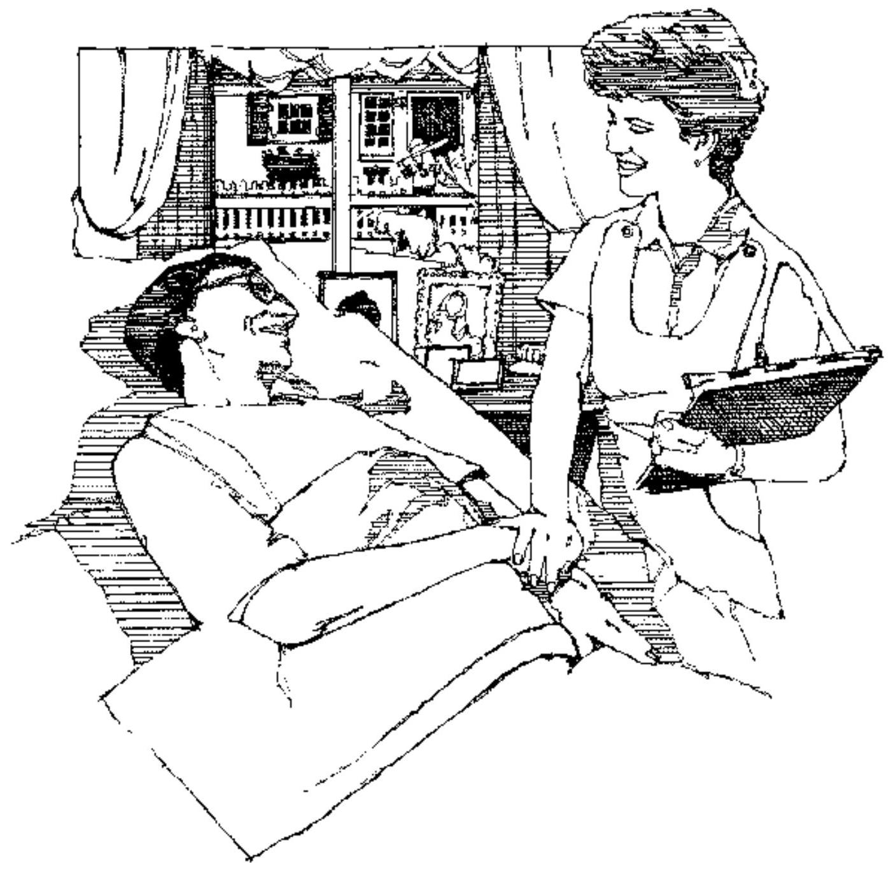
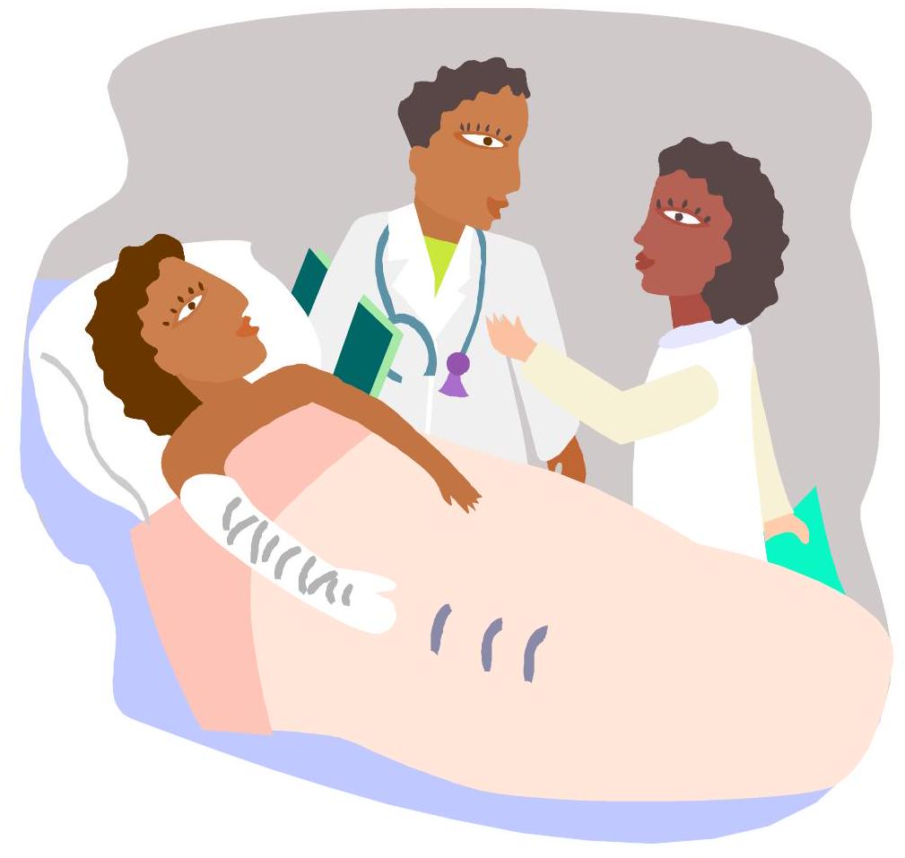
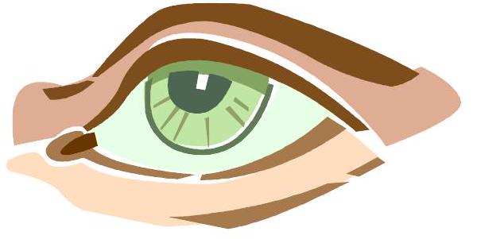
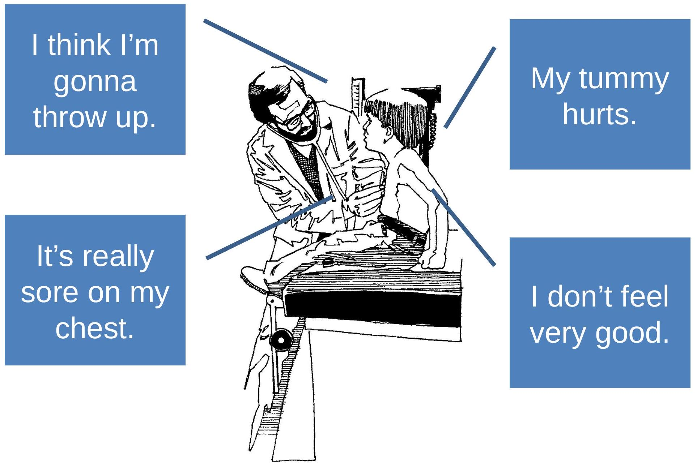

Healthcare Communication Skills
What is communication?
- Communication
- A process by which information is exchanged between individuals though a common system of symbols, signs, or behavior
What is the Purpose of Communication?
- Establish and maintain relationships
- To persuade and change attitudes or behavior
- Develop an understanding of other people
- Problem solve
Healthcare Communication
Identify the elements of communication in this illustration.
Modes of Communication
- Verbal- speaking words
- Voice tone/pitch/volume
- Intonation
- whiney/sarcastic/sad
- Word Choice
- slang, friends, school, adult
- Nonverbal
- Eye contact
- Body language, facial expressions, gestures
- Written communication
3 essential elements:
- Sender - Individual who creates message to convey information or ideas to another person
- Message - Information, idea or thought
- Receiver - Individual who receives the message from the sender
Feedback is a method that can be used to determine if communication was successful.
Occurs when the receiver responds to the message
Allows the original sender to evaluate how the message was interpreted and to make any necessary adjustments or clarification.
Feedback can be verbal or non-verbal.
Elements of Communication
Channel - the route by which the message is sent (is it verbal or non-verbal?)
Interference - anything that changes the meaning of an intended message
Communication Model Questions
- What could happen to block any of the elements of communication?
- Is the message always verbal?
- Is the feedback always verbal?
- What interruptions or distractions could interfere with communication?
Barriers to communication
- Something that gets in the way of clear communication
- Three common barriers:
- Physical disabilities
- Psychological attitudes/prejudice
- Cultural diversity
Barriers (continued)
Physical disabilities
- Deafness/hearing loss
- Blindness/impaired vision
- Aphasia/speech impairments
Psychological
- Caused by prejudice, attitudes and personality
- Moralizing
- Lecturing
- Over-reacting
- Arguing
- Prejudging
- Advising
Cultural Diversity
- Beliefs regarding health care
- Language differences
- Eye contact
- Ways of dealing w/ terminal illness and/or severe disability
- Touch
- Heavy Medication
How Can We Have Effective Communication?
- Health care workers must learn to put barriers aside and show respect to all individuals.
- We must learn to see beyond the surface to the human beings underneath.
- We must adjust our communication styles so that patients can understand.
Effective Communication
- Developing skills in communication helps you become a better healthcare worker.
- It is important always to be courteous and understanding (polite and considerate towards others).
- Take time to evaluate gestures, facial expressions, and tone of voice in order to understand what is really being said.
- You must attempt to understand and to listen.
Rules for Effective Communication
- Message must be clear
- Sender must deliver message clearly and concisely
- Receiver must be able to hear and receive the message
- Receiver must be able to understand the message
- Interruption or distractions must be avoided
Listening
- Essential part of effective communication.
- Paying attention to and making an effort to hear what the other person is saying.
- Requires constant practice.
- Being a good listener makes you a better health care worker.
Good listening skills:
- Show interest and concern for what the speaker is saying.
- Be alert and maintain eye contact with the speaker.
- Avoid interrupting the speaker.
- Pay attention to what the speaker is saying.
- Avoid thinking about how you are going to respond.
- Try to eliminate your own prejudices and see the other person's point of view.
- Eliminate distractions by moving to a quiet area for the conversation.
- Watch the speaker closely to observe actions that may contradict what the person is saying.
- Reflect statements back to the speaker to let the speaker know that statements are being heard.
- Ask for clarification if you do not understand part of a message.
- Keep your temper under control and maintain a positive attitude.
Good listening skills also help you follow directions, make good observations of patients, and understand your fellow workers.
Active Listening Skills
- Reflect on what the sender is trying to say think about the message, not just your response.
- Restate (paraphrase) back to the sender to let them know they are being heard and understood.
- Ask for clarification if you do not understand part of the message.
- Request examples to help explain or clarify meaning.
- Use questioning to find out more information.
Obtaining Feedback
Respond to this call to a veterinary office from a pet owner.
- Paraphrasing
- Reflecting
- Asking questions
- Requesting examples
Communication
Why is this important to us as health care workers?
Nonverbal Communication
- It is not necessary to speak in order to send a message.
- Health care workers need to be aware of both their own and patients' nonverbal behaviors because these are an important part of any communication process.
- When verbal and nonverbal messages agree, the receiver is more likely to understand the message being sent.
Eye Contact
- Lets others know that you are paying attention.
Facial Expressions
- Ex: smile, frown.
- Make sure that the verbal message matches your facial expression.
Gestures
- Motions of a part of the body to express feelings or emotions.
- Ex: shrugging your shoulders, turning your back, leaving the room while someone is talking - convey lack of interest.
Touch
- Can convey great caring and concern or rejection and anger.
- Touch can convey more interest and caring than words could ever do.
Space
- The amount of distance put between a person and others
- Influences
- Status
- Culture
- Content of interaction
- Gender
- Age
Artifactual communication
- Clothing
- Body adornments
- Possessions which are used to communicate information about age, gender, status, personality, and relationships
- Clothing
- Hair style
- Bookbags
Touch
- One of the most personal and powerful means of communication
- The meaning depends on
- Type of touch
- The situation in which the touch occurs
- Who is doing the touch
- The cultural background of those involved
- Appropriateness of touch
- Touch avoidance
- Touch and the healing process
Nonverbal Communication Summary
- Constantly occurring
- More believable than verbal communication
- Primary means of expression
- Almost all feelings and attitudes are expressed through nonverbal behaviors
Paraliguistics
What is paralanguage?
optional vocal effects (as tone of voice) that accompany or modify the phonemes of an utterance and that may communicate meaning
Reflection:
How might understanding nonverbal communication benefit you in the health care field?
Written Communication
Documentation
Recording and Reporting
In health care, an important part of effective communication is reporting or recording all observations while providing care.
Your ability to observe patient behavior and symptoms will directly affect their care.
Documentation
- A record of the patient's progress throughout treatment. Purpose is to record patient care and prove accountability for care given
- Many people are responsible for documenting information on patients.
- Documentation must be accurate, concise, and complete.
- Writing should be neat and legible.
- Spelling and grammar should be correct.
- All records must contain certain information:
- Patient name, address, age, identification #.
- Diagnosis and physician's orders.
- Other information may be required:
- Care or treatment given and how patient tolerated it.
- Time of treatment.
- Observations that would be helpful to other health care workers.
- All documentation must be signed with the name and title of the person recording the information.
- Errors should be crossed out neatly with a straight line, have "error" recorded by them, and show the initials of the person making the error. Never use 'white out'!
- Never skip lines! Write under the previous documentation.
- Patient documentation is a legal record, admissible in a court of law.
- If you do not write it down, it did not happen!
- Use blue or black (depending on your facility policy) ink for all documentation.
- Entries should be in short phrases. You do not need to write in complete sentences.
- Time should be recorded in military (24 hour) time.
Recording & Reporting with Senses
Must record and report all observations while providing care. Must listen to what patient is saying, but observe with other senses as well. You must ALWAYS record objective observations! If there is subjective information that needs to be recorded, it MUST be in quotations or clo.
- Smell: Resident's body or breath odor
- Sight: Changes in Resident's appearance
- Hearing: Resident's words, tone, and breathing
- Touch: Resident's skin and pulse
Healthcare Information can be Subjective or Objective
Subjective
- Cannot be seen or felt
- Often called symptoms
- Usually statements or complaints from the patient
- Use the patient's exact words
Objective
- Can be seen or measured
- Often called signs
- Information collected by the senses
Examples
Subjective Symptoms
Objective Signs of Illness
- Pulse rapid, irregular and thready
- Skin cold and clammy
- No respirations
- Lips cyanotic
Subjective or Objective?
- 1. Coughing - Objective
- 2. Fatigue - Subjective
- 3. Headache - Subjective
- 4. Foul smelling breath - Objective
- 5. Did not eat anything - Objective
- 6. Speech slurred - Objective
- 7. Joints ache - Subjective
- 8. Nervousness - Subjective